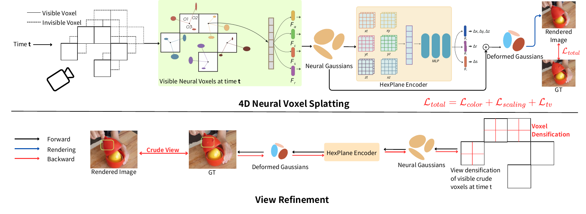

1 National Taiwan University 2 Academia Sinica
Abstract
Although 3D Gaussian Splatting (3D-GS) achieves efficient rendering for novel view synthesis, extending it to dynamic scenes still results in substantial memory overhead from replicating Gaussians across frames. To address this challenge, we propose 4D Neural Voxel Splatting (4D-NVS), which combines voxel-based representations with neural Gaussian splatting for efficient dynamic scene modeling. Instead of generating separate Gaussian sets per timestamp, our method employs a compact set of neural voxels with learned deformation fields to model temporal dynamics. The design greatly reduces memory consumption and accelerates training while preserving high image quality. We further introduce a novel view refinement stage that selectively improves challenging viewpoints through targeted optimization, maintaining global efficiency while enhancing rendering quality for difficult viewing angles. Experiments demonstrate that our method outperforms state-of-the-art approaches with significant memory reduction and faster training, enabling real-time rendering with superior visual fidelity.
Method Overview

Overview of 4D-NVS. Anchor neural voxels are decoded into Gaussian attributes, which are deformed through a multi-resolution HexPlane field and rendered via differentiable Gaussian rasterization.
Supplementary Results
HyperNeRF Rendered Scenes
Ub4D Monocular Rendered Scenes
Ablation Studies
BibTeX